4.1.47. Warm: continuous photoionised absorption model¶
The warm model is a multi-component version of the xabs model. In the warm model, we construct a model for a continuous distribution of column density
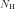
as a function of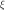
. It is in some sense comparable to the differential emission measure models used to model the emission from multi-temperature gas. Here we have absorption from multi-ionization gas. Depending upon the physics of the source, this may be a better approximation than just the sum of a few xabs components. A disadvantage of the model may be (but this also depends upon the physics of the source), that all dynamical parameters for each value of are the same, like the outflow velocity and turbulent broadening. If this appears to be the case in a given source, one may of course avoid this problem by taking multiple, non-overlapping warm components.The model assumes a logarithmic grid of
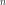
equidistant values of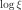
, between a lower limit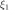
and an upper limit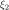
. For each of the grid points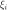
, a value of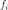
can be adjusted; here is given as evaluated at
, where the differential column density is assumed to be a
continuous function of . At each intermediate point, the
value of
evaluated at
, where the differential column density is assumed to be a
continuous function of . At each intermediate point, the
value of 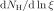
is then determined by doing cubic spline interpolation in the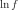
–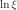
space. In order not to consume too much computer time, the step size for numerical integration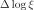
can be set. A typical, recommended value for this (the default) is 0.2.For more information on this model, the atomic data and parameters we refer to Different types of absorption models.
The parameters of the model are:
- xil1:
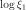
of the lower limit of the ionisation parameter range in units of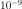
W m. Default value: -4.- xil2:
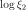
of the upper limit of the ionisation parameter range in units of W m. Default value: 5.- npol:
The number of grid points for the grid, including the end points for . Default value: 19; lower values are generally recommended; minimum value is 2.
- dxi:
step size for numerical integration . Default value: 0.2.
- f01…f19:
Values of
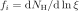
at the grid points. Default values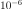
. When npol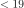
, the remaining values of are simply ignored.
The following parameters are common to all our absorption models:
- icov:
Type of the covering fraction. Default value: 2 (constant, set by fcov). If icov=1, full covering is applied. If icov=3, covering fraction follows a tangent function that increases with energy. If icov=4, covering fraction follows an inverse tangent function that decreases with energy. See description in
pion.- fcov:
The covering factor of the absorber if icov=2. Default value: 1 (full covering). If icov=3 or 4, it sets the covering factor at the high energy end.
- lcov:
The covering factor of the absorber at the low energy end. Default value: 1. lcov is applied only when icov=3 or 4. See description in
pion.- ecov:
The energy when the covering factor changes from lcov to fcov. Only applied if icov=3 or 4.
- acov:
The width of the transit on covering factor. Only applied if icov=3 or 4.
- v:
Root mean square velocity
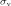
- zv:
Average systematic velocity
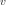
of the absorber (using relativistic Doppler shift)
The following parameter is the same as for the xabs-model (see there for a description):
- col:
File name for the photoionisation balance parameters
Recommended citation: Steenbrugge et al. (2005)